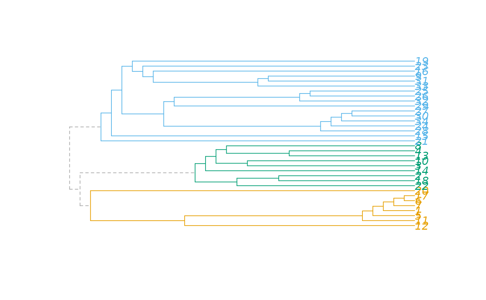

Plot a hierarchical community structure as a dendrogram.
Usage
plot_dendrogram(x, mode = igraph_opt("dend.plot.type"), ...)
# S3 method for communities
plot_dendrogram(
x,
mode = igraph_opt("dend.plot.type"),
...,
use.modularity = FALSE,
palette = categorical_pal(8)
)Arguments
- x
An object containing the community structure of a graph. See
communities()for details.- mode
Which dendrogram plotting function to use. See details below.
- ...
Additional arguments to supply to the dendrogram plotting function.
- use.modularity
Logical scalar, whether to use the modularity values to define the height of the branches.
- palette
The color palette to use for colored plots.
Value
Returns whatever the return value was from the plotting function,
plot.phylo, plot.dendrogram or plot.hclust.
Details
plot_dendrogram() supports three different plotting functions, selected via
the mode argument. By default the plotting function is taken from the
dend.plot.type igraph option, and it has for possible values:
autoChoose automatically between the plotting functions. Asplot.phylois the most sophisticated, that is choosen, whenever theapepackage is available. Otherwiseplot.hclustis used.phyloUseplot.phylofrom theapepackage.hclustUseplot.hclustfrom thestatspackage.dendrogramUseplot.dendrogramfrom thestatspackage.
The different plotting functions take different sets of arguments. When
using plot.phylo (mode="phylo"), we have the following syntax:
plot_dendrogram(x, mode="phylo", colbar = palette(),
edge.color = NULL, use.edge.length = FALSE, \dots)
The extra arguments not documented above:
colbarColor bar for the edges.edge.colorEdge colors. IfNULL, then thecolbarargument is used.use.edge.lengthPassed toplot.phylo.dotsAttitional arguments to pass toplot.phylo.
The syntax for plot.hclust (mode="hclust"):
plot_dendrogram(x, mode="hclust", rect = 0, colbar = palette(),
hang = 0.01, ann = FALSE, main = "", sub = "", xlab = "",
ylab = "", \dots)
The extra arguments not documented above:
rectA numeric scalar, the number of groups to mark on the dendrogram. The dendrogram is cut into exactlyrectgroups and they are marked via therect.hclustcommand. Set this to zero if you don't want to mark any groups.colbarThe colors of the rectangles that mark the vertex groups via therectargument.hangWhere to put the leaf nodes, this corresponds to thehangargument ofplot.hclust.annWhether to annotate the plot, theannargument ofplot.hclust.mainThe main title of the plot, themainargument ofplot.hclust.subThe sub-title of the plot, thesubargument ofplot.hclust.xlabThe label on the horizontal axis, passed toplot.hclust.ylabThe label on the vertical axis, passed toplot.hclust.dotsAttitional arguments to pass toplot.hclust.
The syntax for plot.dendrogram (mode="dendrogram"):
plot_dendrogram(x, \dots)
The extra arguments are simply passed to as.dendrogram().
See also
Community detection
as_membership(),
cluster_edge_betweenness(),
cluster_fast_greedy(),
cluster_fluid_communities(),
cluster_infomap(),
cluster_label_prop(),
cluster_leading_eigen(),
cluster_leiden(),
cluster_louvain(),
cluster_optimal(),
cluster_spinglass(),
cluster_walktrap(),
compare(),
groups(),
make_clusters(),
membership(),
modularity.igraph(),
split_join_distance()
Author
Gabor Csardi csardi.gabor@gmail.com
Examples
karate <- make_graph("Zachary")
fc <- cluster_fast_greedy(karate)
plot_dendrogram(fc)
